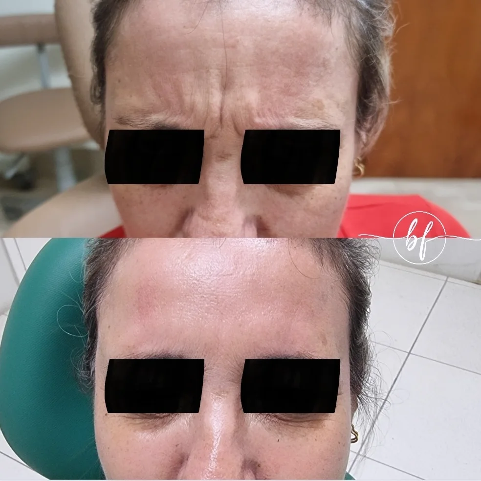
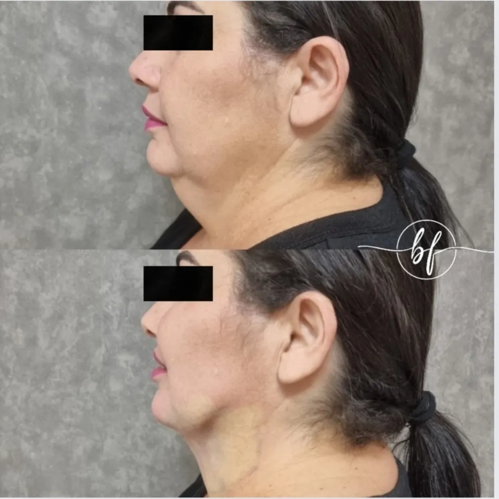

CIDADE JARDIM · PIRACICABA/SP
Cuidado rápido, humanizado e seguro — com a Dra. Bianca Ferreira, cirurgiã-dentista particular em Piracicaba.
QUEM VAI TE ATENDER
ATENDIMENTO
TRAJETÓRIA
RESULTADOS REAIS
Casos tratados pela Dra. Bianca — sem edição, sem banco de imagens.


AGENDE SUA CONSULTA
CONTATO